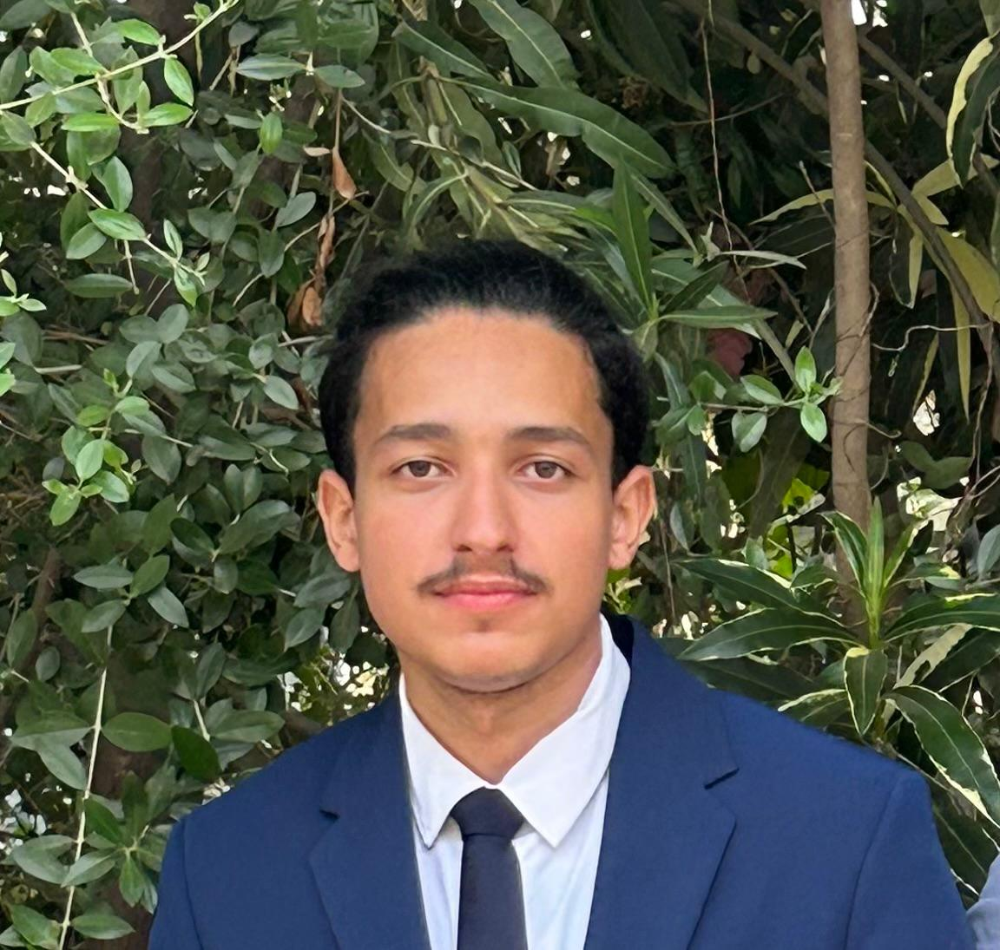

Bonjour, je suis Yannel Aissani
Développeur Full-Stack & Data | Candidat au cycle Ingénieur
Je viens de terminer mon BUT Informatique (parcours Réalisation d'applications) à l'IUT de Villetaneuse. J'aime construire des applications web et mobiles, et travailler la donnée, du backend jusqu'à l'IA. Mon parcours, d'Alger à Paris, m'a appris à m'adapter vite et à tenir dans la durée.

Mon Parcours
D'Alger à Paris, étape par étape
Ingénieur Informatique - USTHB
Première année à l'Université des Sciences et de la Technologie Houari Boumediene à Alger (2022-2023).
BUT1 - Adaptation
Découverte d'un nouvel environnement, nouvelle culture et méthodes d'enseignement différentes (2023-2024).
BUT2 - Le travail qui paie
Classé parmi les meilleurs de ma promotion. Une bonne surprise après les difficultés de la première année (2024-2025).
BUT3 - Réalisation d'applications
Troisième année autour du développement full-stack, de l'architecture logicielle et des bases de données avancées, avec un stage en entreprise (2025-2026).
La suite - Cycle Ingénieur ou Master
À partir de 2026 : je veux poursuivre vers un cycle ingénieur en informatique ou un master spécialisé, dans l'un de ces domaines :
- Développement web et applications
- Data science
- Data engineering
L'idée est simple : approfondir la technique et continuer à construire des projets concrets.
Compétences Clés
Ce que je sais faire et avec quels outils
Développement full-stack
Java, Python, PHP, JavaScript, React et Next.js. Conception d'API REST et architecture MVC, du frontend à la base de données.
Données & IA
PostgreSQL, MySQL, MongoDB et Redis. Traitement de données et similarité vectorielle (embeddings) pour des moteurs de recommandation.
DevOps & systèmes
Docker et Docker Compose, Linux (WSL, Bash), administration de serveurs et déploiement sur VPS. Git et GitHub au quotidien.
Langues
Un profil multilingue, utile en équipe comme avec les clients
Français · Arabe
Bilingue (C2). Langues de travail et du quotidien.
Anglais
Niveau B2. À l'aise pour lire la doc technique et échanger.
Kabyle
Langue maternelle.